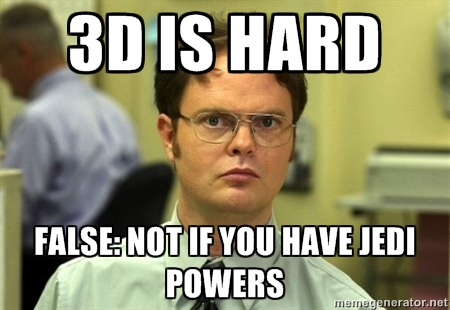
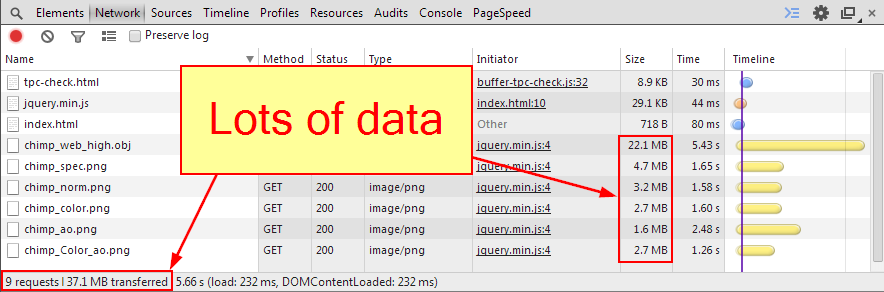

Viewer Performance Pipeline on the Web
SPAR International Colorado 2014
Justin Ribeiro
justin@stickmanventures.com
@justinribeiro +Justin Ribeiro justinribeiro
Slides: http://goo.gl/
In the beginning
3D and the web = hard
Things started getting better

Oh yeah, WebGL

Speeeedy

Argh, the pain
[why you hate me ie]3D and the web = better, but still hard
Let's be friends
Son of a #@$%^*
3D and the web = still moving forward
What's an online viewer to do?
- We need to render an object to the viewport
- We need to do so as fast as we can
- We need to be where our users are
You are not the average user
Rule #1: Your workstation !== your users device
Handling the entire pipeline
- It's just not rendering a object
- We have resources to send, data to parse, features to share
It's not so simple

Make the hard decision first
What must my viewer accomplish?
No, your 155M poly model is not ready
- You forgot rule #1
Great! One click decimate and just load it up right?
A base example
But all is not golden
- A decimated mesh != an optimized mesh
- Mesh + all those files = lots of network utilization
- Read + drawn = memory and GPU time consumed
Who cares about network?
Users who want to use your site
That's not a real world example Justin
I beg to differ
Pssstf, you'll never find another

Hummmm. :-/ Sad sounds.
Burn baby burn, the user
- Your users pay with their time, battery et cetera
- Increase in page size = increased rendering times
- Users expect pages to load in two seconds
- After three seconds: ~40% of users will abandon your site
Crunch what you can
- Diffuse / AO / light map: combine + compress
- Geometry: textures backfill the detail, use LoD, lose precision
- Everything: Determine your formats and use gzip
Let our powers combine
Level of Detail
- Traditional sense: multiple models swapped as view changes
- Could test via media query, simply serve proper size
Those pesky files
- PNG v JPG: the good and the ugly
- OBJ, aka the bloated whale
The Trades Offs
- If we do more work on the backend, we have more requests and possibly larger assets to serve
- If we hand off less assets but more config data, we expect the client GPU to do more work
Throw in a wrench
- Mobile is hard to ignore
- Offers new challenges: latency, memory constraints, support
No magic bullet
- One export does not fit all
- General approaches lead to